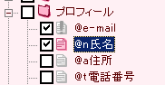

I don't know a method.
I don't know a method.
とりあえず使ってみて、便利なのは判ったけどちょっと自分の使い方とあわなかった場合。設定を変えたいんだけど、設定のマニュアルを全部読んで書いてある場所を探すのは嫌だ。他の入力支援ソフトから乗り換えて、同じようなことをしたいんだけど方法が判らない。そんな時にこの章を読んでください。探してる情報があるかもしれません。
The whole
Q.I do not understand basic operation!
Q.What doing a HookSet.dll?
Q.拡張マクロのホットキー、使い方がよくわかりません。
Q.転載しても良いですか？
Q.拡張マクロの部分って何書いてもいいの？
The popup tree
Q.ポップアップを出しっぱなしに出来ませんか？
Q.登録文をペーストしないで、クリップボードに入れるだけでいいんだけど。
Q.複数のデータをまとめて貼り付けたい。
Q.ホットキー以外の方法でポップアップを出したい。
Q.ポップアップする位置を変えたい。
Q.フォルダごとにホットキーを割り当てたい。
Q.ポップアップを出さずにデータを貼り付けたい。
Q.各データに割り当てたホットキーを知りたい。
Q.貼り付けたいデータまで移動するのが大変なんだけど。
Q.データの名前を変えたい。
Q.データの内容を変えたい。
Q.フォルダの内容をクリアしたい。
The setting
Q.初期設定はどうなってんの？
Q.デスクトップの隅にマウスカーソルをやるとポップアップする設定にしてるけど範囲が狭いです。広げてください。
Q.ホットキーの設定を変えたい。
Q.Windowsキーをホットキーに設定できませんか？
Q.ストックモードの音を止めたい。
Q.タイマーは全部止めたい。
Q.外見を変えたい。
Q.Ctrl+V以外で貼り付けをするソフトでもCharu3を使いたい。
The functions
Q.複数貼り付けをする時に、それぞれの貼り付けの後にEnterを押させたいんだけど。
Q.ストックモードが上手く使えない。
Q.クイックアクセスが上手く使えない。
Q.データを貼り付ける途中でキー入力を入れたい。
The Data
Q.他のソフトとデータを共有したい。
Q.データのファイルがバイナリなのが嫌だ。テキストにしてくれ。
Q.他のソフトからデータを移行したい。
Q.他のソフトのデータをCharu3のデータと混在させたい。
Q.クリップボード履歴を階層化したい。
Q.クリップボード履歴は終了時にクリアしたい。
The whole
 QI do not understand basic operation.
QI do not understand basic operation.
A
標準データにある「チュートリアル」を一通りペーストして読めば基本的な使い方は学習できるようになってますから試してみてください。読み終わったらチュートリアルは消してかまいません。また、ヘルプのメニューがピンクの部分は簡単な説明なので読んでおいてください。あと、掲示板やメールで質問するときは、このヘルプ、チュートリアル、掲示板の過去ログには目を通しておいてください。
QHookSet.dllってなにをやってるんですか？
A
Windows98系のOSはCtrl、Shift、Altなどのモディファイアキーを単独でホットキーに設定することが出来ません。WindowsNT系は出来ます。で、Ctrl*2とかShift*2でのホットキーを実現するためには98系ではキー入力のフック処理が必要になります。これをするのがHookSet.dllです。フック処理はDLLにしないといけないという制約があるのでDLLになってます。キーダブルクリックのホットキーを使わない場合はHookSet.dllは消しちゃってもかまいません。NT系では全く必要無いファイルなので当然消しちゃってOKです。
Q拡張マクロのホットキー、使い方がよくわかりません。
A
Charu3は、2つの動作についてのホットキーは設定画面で設定できます。ストックモードの切り替えと、ポップアップを呼び出す動作の二つです。これ以外にホットキーを使う場合は全て拡張マクロで設定します。データ内容を直接(ポップアップを出さずに)貼り付けたい場合や、特定のフォルダを選んだ状態でポップアップしたい場合には、拡張マクロでホットキーを設定します。
また、特定のデータやフォルダに選択テキストを溜める「ダイレクトコピー」という機能もあって、これも拡張マクロで設定します。「DirectCopykey」という拡張マクロを使います。今、どんなホットキーが拡張マクロで設定されてるか知りたい場合は、ポップップを出して検索機能を使って「key=」とか検索すればわかると思います。次候補はF3を押せば出てきます。拡張マクロを変更したい場合は、データを選択して右クリックメニューからプロパティを選んでください。
Q転載しても良いですか？
A
いいです。Charu3を広めてください。ただし最新版をお願いします。あと、圧縮形式を変えるのは良いですが、内容は変えないで下さい。あと、最新版とか情報にアクセスしやすいように配布サイトや掲示板にリンクを張ってもらえると便利だと思います(強制はしませんが)。また、雑誌などのメディアの場合は連絡ください。個人の方の場合は無許可でも構いません。
Q拡張マクロの部分って何書いてもいいの？
A
結構何書いてもOKです。簡単なメモとか備考みたいに使えます。ただし、拡張マクロの行はそれだけ書くようにして下さい。備考とマクロは行を分ければ問題ありません。同様にフォルダのデータ部分もメモとしてつかえます。フォルダの説明を書くと良いと思います。
The Popup Tree
Qポップアップを出しっぱなしに出来ませんか？
A
Charuシリーズは貼り付けをしたらさっさと消える、というのが基本的な理念としてありますのでウィンドウを出しっぱなしにするという機能はありません。ちなみにそういう感じのソフトとしてQuuiがあります。試してみるのもいいかと。
Q登録文をペーストしないで、クリップボードに入れるだけでいいんだけど。
A
Shiftを押しながら決定するとペーストしないでクリップボードに入れるだけになります。
Q複数のデータをまとめて貼り付けたい。
A
ポップアップを出した状態で、TABキーか、Ctrl+スペースを押すとツリーにチェックボックスが現れます。それに同様のキー操作でチェックを入れてEnterキーを押すとチェックを入れた順番でまとめて貼り付けが実行されます。フォルダをクリックするとフォルダ全体にチェックが付きます。
Qホットキー以外の方法でポップアップを出したい。
A
ホットキー以外に２種類の方法があります。一つは、タスクトレイのアイコンを左ボタンでクリックする方法。もう一つはデスクトップの隅にマウスカーソルを持っていく方法。デスクトップの方は初期設定ではOFFになっているので設定してください。
Qポップアップする位置を変えたい。
A
通常はホットキーを押すとキャレット位置にポップアップが出ます。これを変更できます。デスクトップの四隅、マウスカーソル位置、デスクトップの中央です。好きな位置に設定してください。
Qフォルダごとにホットキーを割り当てたい。
A
設定画面で設定できるポップアップ用のホットキーは一つですが、拡張マクロを使えばフォルダごとにホットキーを設定できます。データのプロパティを開き、拡張マクロのボックスに「Hotkey=alt+r」などと記述します。テンプレートもあるので利用してください。すると、ALT+Rを押すとそのフォルダを選択した状態でポップアップが出ます。例えば履歴フォルダに割り当てると便利です。alt*2やctrl*2といった設定も可能です。
Qポップアップを出さずにデータを貼り付けたい。
A
拡張マクロのホットキーですが、フォルダだけでなくデータ自体にも割り当てられます。例えばHTMLの<b>タグを貼り付けるデータに「Hotkey=alt+b」割り当てて実際に使うと、あたかもエディタの機能の一つのように使うことが出来ます。
Q各データに割り当てたホットキーを知りたい。
A
各データに割り当てたホットキーですが、何を割り当てたか判らなくなってしまう場合があります。これって結構不便。そんな時は、ポップアップの右クリックメニューから検索を選び、内容のラジオボタンをチェックして「Hotkey」か「hotkey」を検索してください。見つかったらF3で次のデータも探します。こうすればホットキーを割り当てられたデータが全てわかります。
Q貼り付けたいデータまで移動するのが大変なんだけど。
A
データが増えてくると色々なフォルダに散らばるデータ間を移動するのが大変です。そんな時はクイックアクセスを使いましょう。データの名前に「@b」や「@t」などのタグをつけます。「/r」とか「*9」とかでも構いません。そしたら、ポップアップが出てる状態でそのタグをタイプします。すると、目的のデータにジャンプできます。Charu3の場合、この機能無しだと結構不便です。是非使ってください。
 Qデータの名前を変えたい。
Qデータの名前を変えたい。
A
名前を変えたいデータを選択して、F2キーを押します。エディットボックスになりますので名前を変えてください。
Qデータの内容を変えたい。
A
データを選択して、マウス右クリックかALTキーかアプリケーションキーを押します。出たメニューからプロパティを選ぶと編集画面になるので編集してください。
Qフォルダの内容をクリアしたい。
A
クリアしたいフォルダを選択して右クリックメニューーから「フォルダの内容をクリア」を選んでください。確認後にクリアされます。
The setting
Q初期設定はどうなってんの？
A
詳しい部分は[設定]を見てもらうとして。ホットキーはAlt+Xがポップアップ、Ctrl+無変換がストックモード切替に割り当てられてます。また、拡張マクロでホットキーが設定されていて、履歴フォルダにAlt+RがShift+Ctrl+BがHTMLの<b>タグ、Alt+Shift+Rがチュートリアルのテストデータに設定されています。適当に変えて使ってください。
Qデスクトップの隅にマウスカーソルをやるとポップアップする設定にしてるけど範囲が狭いです。広げてください。
A
Charu3.iniの「CornerPopupPix」で数字を変えてください。5にすると角の5ドットぶんが判定範囲になります。
Qホットキーの設定を変えたい。
A
タスクトレイアイコンを右クリックするか、ポップアップで右クリックするかするとメニューが出るので、そこで「設定」を選んでください。「ポップアップ」の設定画面にホットキーの設定があるので好きなように変えてください。
QWindowsキーをホットキーに設定できませんか？
A
出来ません。クイックスマイリーは出来ますが、普通のWindowsのソフトはWindowsキーをホットキーには使いませんのでそれに習って使わないことにしてます。慣習というか。技術的には出来ますが、仕様が汚くなるので対応はしません。
Qストックモードの音を止めたい。
A
「設定」の「ストックモード」-「ストックモード中はコピー時に効果音を鳴らす」のチェックを外してください。
Qタイマーは全部止めたい。
A
初期設定では自己診断タイマーのみが動いています。「設定」の「一般設定」-「自己診断タイマー」を0にしてください。するとタイマーは全て止まります。デスクトップの隅でのポップアップを有効にするとタイマーが動きますから、嫌なら無効にしてください。
Q外見を変えたい。
A
「設定」の「ビジュアル」でフォント名、サイズ、アイコンファイル、色などを変更できます。好みに応じて変更してください。
QCtrl+V以外で貼り付けをするソフトでもCharu3を使いたい。
A
「設定」の「キー設定」-で対応できるように設定してください。詳しくは「キー設定」の説明をどうぞ。
The functions
Q複数貼り付けをする時に、それぞれの貼り付けの後にEnterを押させたいんだけど。
A
拡張マクロの「AfterKey」を使います。この拡張マクロはフォルダ全体に適用することも出来るので、例えばプロフィールフォルダに適用すると便利です。ですが、今はEnterを押したいけどTabを押したい場合もある、なんて時にはもう一つフォルダを用意する必要があります。拡張マクロを書き換えるのも面倒ですし。書式はAfterKey=キー;回数;待ち時間(ms)で、「AfterKey=tab;5;100」とか、「AfterKey=tab,enter;10;500」とか、「AfterKey=enter」とか書けます。
Qストックモードが上手く使えない。
A
こちらを読んでください。
Qクイックアクセスが上手く使えない。
A
こちらを読んでください。
Qデータを貼り付ける途中でキー入力を入れたい。
A
キー入力マクロを使うと実現できます。ポップアップの右クリックメニューからプロパティを選び、本文中にマクロを書きます。ウェッブの認証などを自動化できます。
The data
Q他のソフトとデータを共有したい。
A
Charu3の場合、他のクリップボードソフトとデータを共有する機能があります。データ互換プラグインがそれです。読み込むだけでなく、保存も可能です。詳しくは「データファイル切り替え」を読んでください。
Qデータのファイルがバイナリなのが嫌だ。テキストにしてくれ。
A
これはデータ互換プラグインで実現できます。ただし、標準で用意しているプラグインは保存に対応してません。テキスト形式のデータ(QTClipやHotClip)はファイル内にコメントがあるからです。コメントを無視してガンガン保存しちゃうプラグインを作れば良いんですが、今はありませんから誰か作ってください。テキスト版Charu3形式ってのもアリです。誰か作ってください。俺は必要ないので作りません。
Q他のソフトからデータを移行したい。
A
2通りの方法があります。まずはデータファイル切り替えを使う方法。
1.トレイメニューから「データファイル切り替え」を選びます。
2.ファイルの種類を変え、取り込みたいデータを指定します。
3.読み込んだらポップアップを表示して確認してください。
4.問題なさそうなら、タスクトレイメニューの「データを別名で保存する」を選びます。
5.Charu3形式でファイルを保存します。
6.5で作ったファイルを、「データファイル切り替え」で読み込みます。
あと、インポートを使って取り込む方法もあります。これはポップアップからメニューを出してインポートするだけですから簡単です。
Q他のソフトのデータをCharu3のデータと混在させたい。
A
インポートでデータを取り込めば混在して使うことが出来ます。が、これだと各ソフトのマクロが動きません。それは困るので、フォルダごとに使うマクロを設定します。フォルダのプロパティを出し、拡張マクロに「Macro=hotclip」などと設定します。そうすると、そのフォルダ内ではHotClip形式のマクロが使えるようになります。使えるマクロの種類はデータ互換マクロの種類で決まります。
Qクリップボード履歴を階層化したい。
A
クリップボード履歴の数を多く設定するとちょっと使いずらい場合があります。そんな時は履歴フォルダを階層化してください。拡張マクロに「ClassHistory=20」などと設定すると、20個を超えた履歴は20個ごとにフォルダでまとめられます。
Qクリップボード履歴は終了時にクリアしたい。
A
履歴フォルダの拡張マクロに「ClearRec=yes」と設定すると、履歴のデータは保存されなくなります。